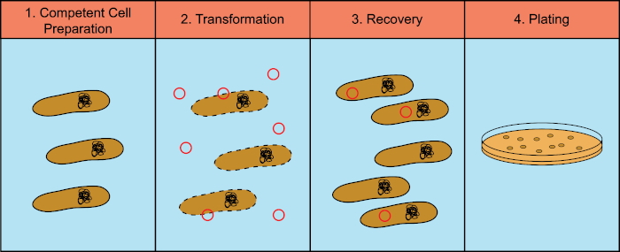
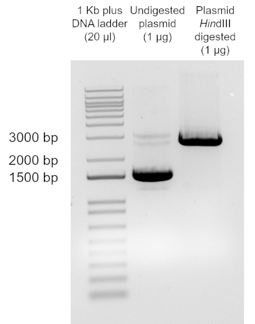

使用氯化钙转化大肠杆菌细胞
Transformation of E. coli: Adapted Calcium Chloride Procedure | Microbiology | JoVe
细菌适应性
感受态：细菌容易吸收外源DNA的状态，摄取外部质粒DNA。 转化：细菌吸收外源DNA后引起其遗传物质的改变。
Gram-negative bacteria lipopolysaccharide (LPS)带负电 + 带负电的DNA+钙（Ca2+）这种方法主要用于革兰氏阴性菌的转化。
试剂与仪器
试剂
- 受体大肠杆菌DH5α
- 0.1mM \(CaCl_2\)
- LB 液体培养基(10 g casein enzymic hydrolysate, 5 g yeast extract and 5 g sodium chloride in 1000 mL of H2O) 固体培养基
- 氨苄青霉素
- 1X TAE buffer (40 mM Tris Base, 20 mM Acetic Acid and 1mM EDTA)
- Super Optimal broth with Catabolite repression (SOC): (2% (w/v) tryptone, 0.5% (w/v) yeast extract, 10 mM NaCl, 2.5 mM KCl, 10 mM MgCl2, 10 mM MgSO4, and 20 mM glucose)
- Plasmid pUC19 DNA (100 pg/ µl)
仪器
分光光度计 离心机 加热机 紫外线光源
实验操作

==除非另有说明，否则本方案中的所有步骤都需要使用无菌技术在冰上或4°C温度下进行==
- 感受态细胞的制备：
- 70%乙醇台面消毒
- 从大肠杆菌DH5α的冷冻库（在LB中过夜培养的20%甘油中冷冻）中，带菌环在LB琼脂板上划线分离细菌。在37°C下培养过夜（16-20小时）
- 第二天，70%乙醇台面消毒
- 无菌接种环将单个菌落接种到试管中的3 mL LB肉汤中。37°C，210rpm摇床振荡生长过夜（16-20小时）。
- 测量过夜培养物的OD600。将过夜培养物接种在1升烧瓶中的100 mL LB肉汤至OD600＝0.01。37°C，210 rpm摇床培养。每15-20分钟在分光光度计中监测一次OD600，直到培养物达到OD600=0.35（约3小时）~~注：为了使转化有效，细菌细胞需要处于指数生长中期。最大细胞数需要为\(10^8\)个细胞/mL，对于大多数大肠杆菌菌株来说，这相当于OD600=0.4。分光光度计的使用允许测量OD600，这允许确定细胞处于适当的生长阶段。如果该方案将用于其他菌株，则有必要进行校准，以确定特定OD600值下菌落形成单位的数量，从而确定这种相关性。
- 将50毫升培养物转移到2个冰冷的聚丙烯大瓶中，瓶子放回冰上20分钟冷却
- 4°C，2700g，离心10分钟来回收细胞。
- 弃去上清液。将聚丙烯大瓶倒置在吸水纸上，沥干最后的介质痕迹。
- 悬浮沉淀复合物到30mL CaCl2-MgCl2（80mM MgCl2，20mM CaCl2）冰冷溶液中。首先加入5 mL溶液，小心旋转，直到颗粒完全溶解，然后加入剩余的25 mL溶液。==禁止震荡器==
- Repeat 前两步
- 如果感受态细胞要直接转化，则通过小心地旋转试管，将每个细菌颗粒重悬于2 mL CaCl2（0.1 M）冰冷溶液中。如果颗粒不能用这种方法重新悬浮，则通过上下轻轻移液进行重新悬浮（避免气泡形成）。也可以将感受态细胞冻存以备日后使用，将颗粒重悬在2毫升含有10%（v/v）甘油的0.1M CaCl2溶液中。这个解决方案需要冰冷。将等分细胞悬浮液放入冰冷的1.5 mL EP管（每管160µl）。立即在干冰/乙醇浴中冷冻感受态细胞。将试管转移到-70°C的冷冻柜中。
- 质粒DNA转化感受态细胞
- 将50µl感受态细胞转移到2个1.5 ml EP管中。将1µl（100 pg）的pUC19质粒DNA添加到其中一个 EP管，并使第二个 EP管不含DNA（阴性对照）。轻轻混合（避免形成气泡）。在冰上孵育30分钟.
注：体积为10µL的DNA不超过50 ng - 将 EP管 在42°C下准确孵育45 s。
注：热冲击是一个关键步骤。不要超过温度或培养时间。这有利于感受态细胞吸收外来DNA - 立即将 EP管 转移到冰上快速冷却2-3分钟。
- 将50µl感受态细胞转移到2个1.5 ml EP管中。将1µl（100 pg）的pUC19质粒DNA添加到其中一个 EP管，并使第二个 EP管不含DNA（阴性对照）。轻轻混合（避免形成气泡）。在冰上孵育30分钟.
- 细胞回收：选择性培养基，回收质粒，PCR鉴定
- 加入950µL SOC培养基，在37°C下培养管1小时，使细菌恢复并表达质粒中编码的抗生素抗性标记。
- 1.5 mL EP管 在990µL SOC中稀释10µL细胞悬浮液（1/100稀释），或者，在900µL的SOC中稀释100µL细胞悬浮液（1/10稀释）。将100µl稀释液和阴性对照品涂抹到==氨苄青霉素选择性平板== 上37°C培养过夜（12-16小时）。阴性对照中不应生长菌落。注：
通常，将100µL的1/100和1/10稀释液电泳，每个平板将产生足够数量的菌落形成单位（cfu）。理想情况下，这个数字应该在30-300cfu之间，这样就有足够的菌落，但彼此分离。然而，cfu的数量将取决于转化效率（见数据分析和结果部分）。 - 计数转化获得的cfu/板
- 电泳鉴定 转化细菌是否具有pUC19质粒
无菌环将单个菌落接种到装有3毫升LB肉汤的试管中。37°C，210rpm摇床振荡生长过夜（16-20小时）。
第二天，根据说明书进行质粒纯化 #plasmidDNA
用限制性内切酶HindIII在37°C下酶解1µg纯化的pUC19 1小时。
注：任何切割pUC19多克隆位点的酶都可以用于此步骤。DNA凝胶电泳：20μlDNA ladder，1μg酶解和1μg未酶解的质粒，95V，1h
紫外灯

- 数据分析
dilution1/100 34cfu
dilution1/10 246cfu 电泳之前
\[transformation\ efficiency (TE)=\frac{colony\ forming\ units (cfu)}{the \ amount(in\ μg)of\ plasmid \ DNA} / dilution(稀释)\]
首先将cfu除以µg 质粒DNA，在本例中为100pg=0.0001µg。然后将结果除以稀释系数。在本例中，使用1/10的稀释液，并将100µL/1 ml溶液进行电泳（稀释度：1/10×100µL/1000µL=0.01）。
\[TE =\frac{246cfu}{0.0001μg} /0.01\ dilution =2.46 ×10^8cfu/μg\]
对从转化细胞中回收的质粒DNA的酶解分析，对比DNA Marker，表明，该质粒具有pUC19DNA的预期大小（2686bp）。